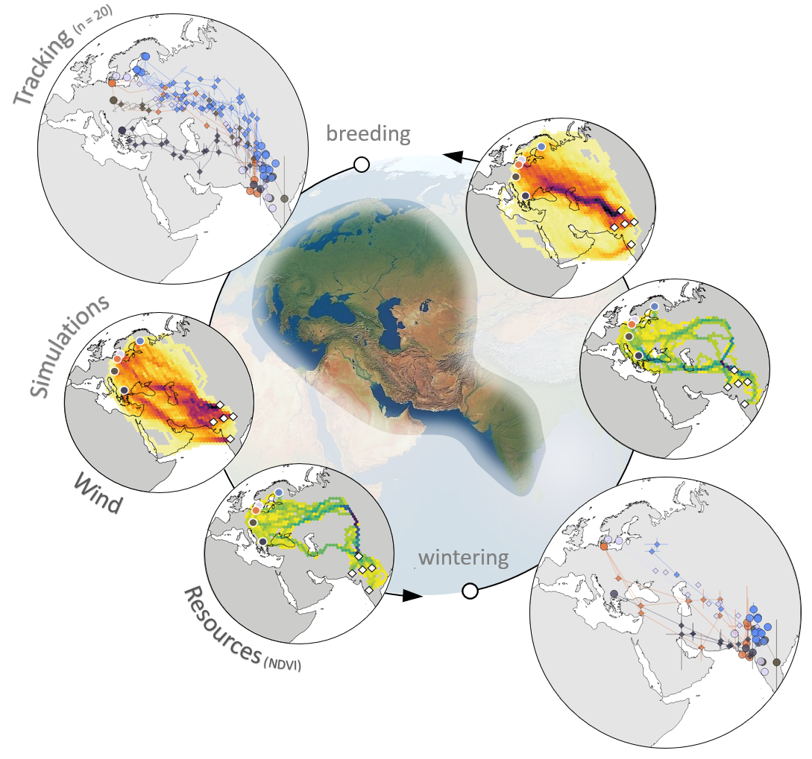

Migration ecology of the Indo-European flyway - a case study on Common Rosefinch
Last edited on 2019-08-19
Preface

This is an online supplement to the Poster presented at the 2019 EOU conference in Cluj-Napoca, and provides detailed description of methods as well as additional data to review.